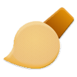

Latest version available: GPaint 1.1.0
You can download GPaint either from the GPaint official GitHub repository, or you can add it to Flatpak with:
flatpak remote-add --user --gpg-import=gpaint.gpg gpaint https://fraaaaa4.github.io/gpaint-flatpak
Then, to install it:
flatpak install --user gpaint org.fratta.gpaint